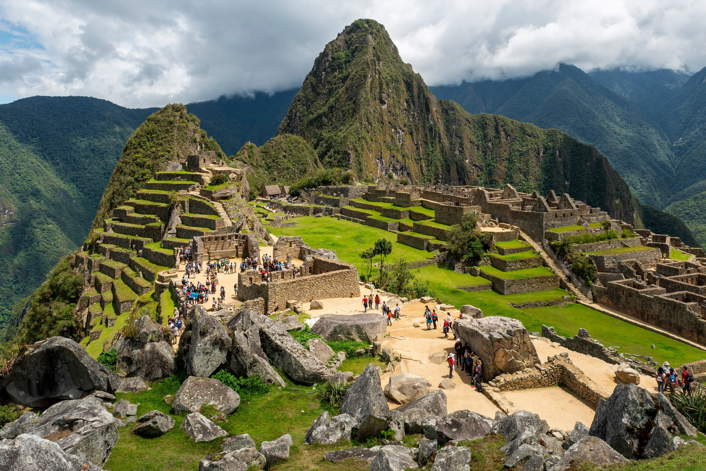
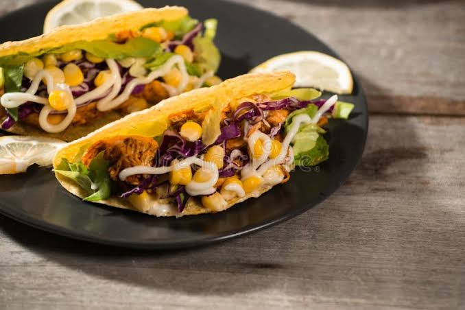
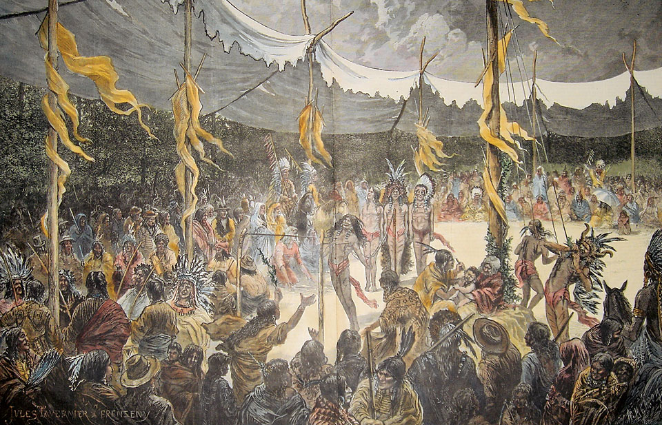
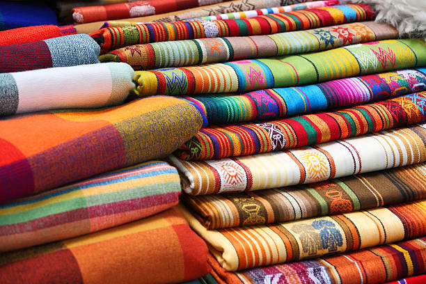

América é o continente localizado no hemisfério ocidental, estendendo-se no sentido
norte-sul,
desde o oceano Ártico até o Cabo Horn,
ao longo de cerca de 15 mil quilômetros.
É o segundo maior continente do mundo em extensão territorial.

As americas são um continente feito pela divisão em América do Norte, América Central e América do
Sul é
uma regionalização geográfica baseada na posição e na continuidade física das terras do continente
ricas
em diversidade e importância pelo continente americano e latino-americano, com uma história marcada
por
civilizações antigas,
colonização europeia e movimentos de independência.
As Américas são
conhecidas por sua diversidade cultural, com uma mistura de influências indígenas.


